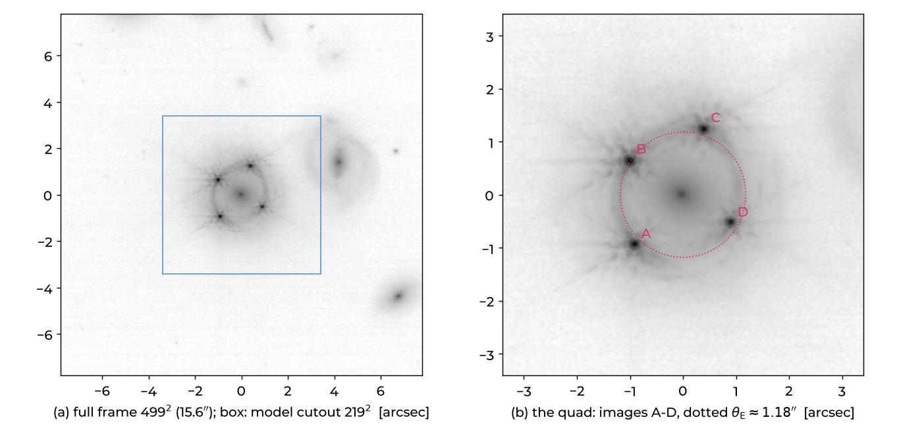
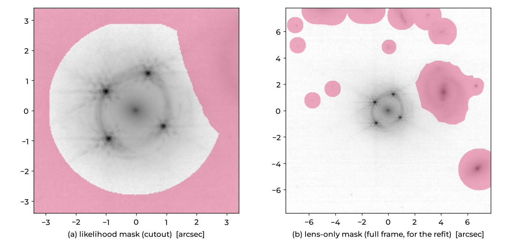
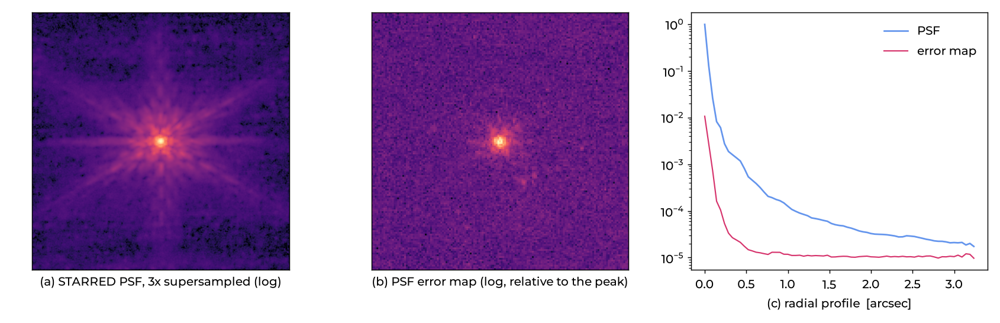
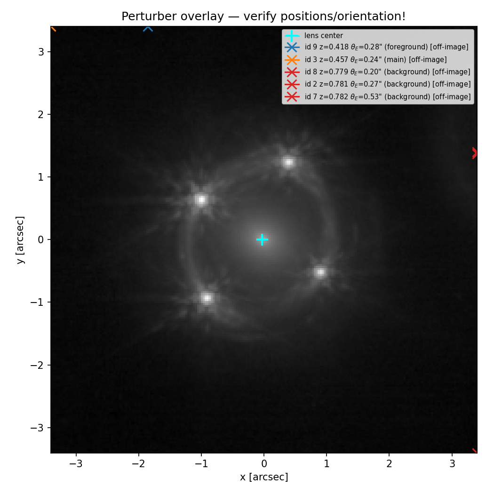
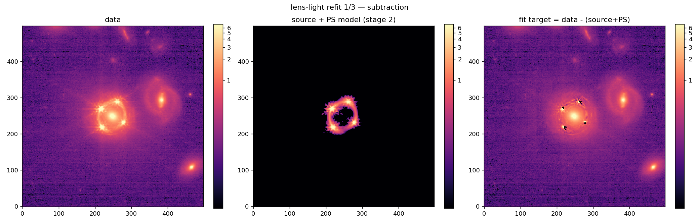
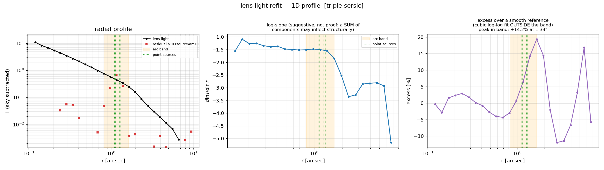
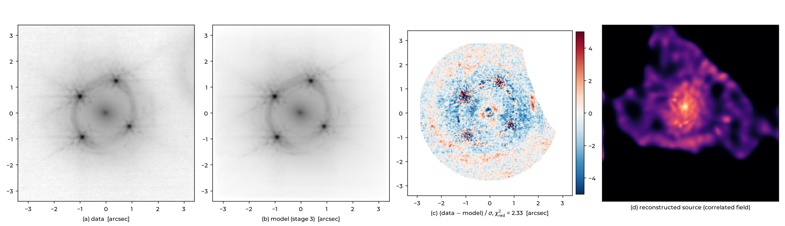
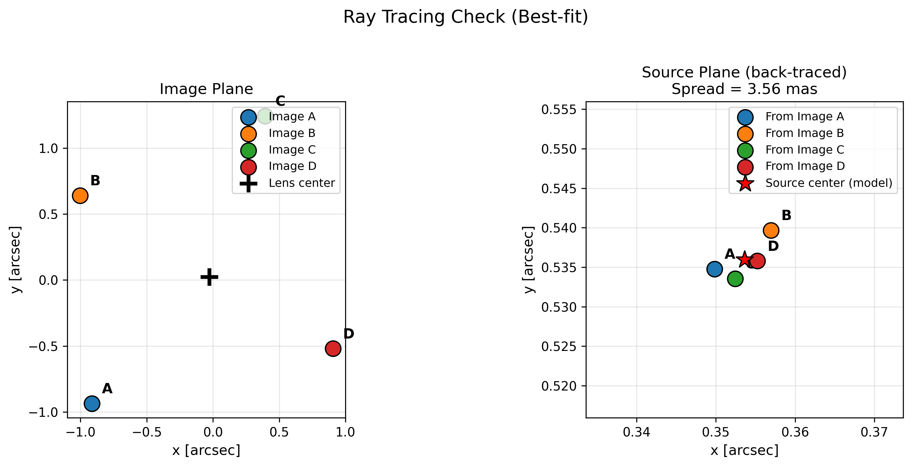
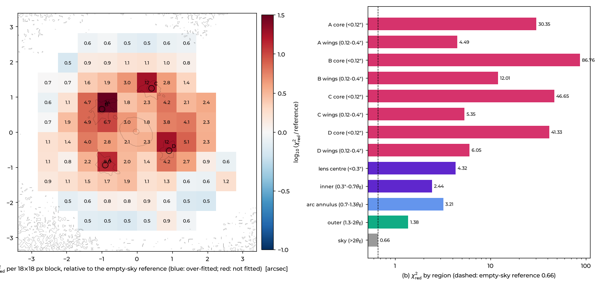

Lensed quasar: HE0435−1223
JWST/NIRCam F150W · a quadruply imaged quasar with measured time delays · about 45 min of reading, the run itself takes 10 min to a few hours depending on the budget.
Step 0The lens and the goal
HE0435−1223 is a quasar at z = 1.689 lensed by an elliptical galaxy at z = 0.455 into four images, A to D, about 1.2″ from the lens. Its host galaxy is lensed too and forms an Einstein ring. The COSMOGRAIL monitoring measured the time delays between the images. Together with a lens model they give the time-delay distance and H0, which is why this lens is a TDCOSMO system.
We build the model ALPACA's production run used. The image, the noise map, the masks, the PSF and the
perturber catalogue ship with ALPACA in data/, and the configuration is the shipped
config.json.
- data
- JWST/NIRCam F150W i2d mosaic (GO 1198), 0.0312″/px
- lens / source z
- 0.4546 / 1.689
- θE
- ≈ 1.18″
- model
- EPL + shear, double → triple Sérsic lens light, shapelets → correlated-field source, joint PSF, 5 perturbers
HE0435 is a cosmography lens, so its analysis is blinded. This tutorial shows data, models, residuals and θE, but never the power-law slope γ, DΔt or H0.
Step 1Install and get the data
git clone https://github.com/hkrizic/alpaca.git && cd alpaca
python3.12 -m venv .venv && source .venv/bin/activate && python -m pip install --upgrade pip
python -m pip install -e ".[apple]" # Apple Silicon; or ".[cpu]", ".[gpu]"
alpaca-device
ls data/ # image.fits noise_map.fits mask_*.fits psf_supersampled.fits psf_error_map.fits psf_starred_seed.npz perturbers.jsonStep 2Look at the data
Always start by looking. image.fits is the full frame (499 × 499 pixels, 15.6″), centred on
the lens, with the sky pedestal subtracted. ALPACA models only the central cutout
(data.cutout_size: 219, 6.8″). The lens-light refit later uses the whole frame to pin down the
faint wings and the sky.

Things to notice: bright point images with JWST's six diffraction spikes, a smooth elliptical lens, and the ring connecting the images. The ring carries most of the information on the mass profile.
Step 3Check the noise map
The noise map (1σ per pixel, same units as the image) weights every pixel. If it is wrong, every χ² is wrong. Compare it with the real scatter in empty sky:
import numpy as np
from astropy.io import fits
img, err = fits.getdata("data/image.fits"), fits.getdata("data/noise_map.fits")
box = (slice(20, 70), slice(20, 70)) # an empty corner: check it on the image first!
print(np.std(img[box]) / np.mean(err[box])) # ~1; drizzled mosaics: below 1 (correlated noise)A ratio far from 1 needs an explanation before modelling. In one real dataset the RMS map overstated the noise by 1.7× (a unit bug), which made every fit look wonderful.
Step 4Masks
Two different masks (1 = use the pixel):
- the likelihood mask on the cutout (
data.likelihood_mask_path): the lens, the ring and the images, with unrelated objects excluded; - the lens-only mask on the full frame (
light.lens.refit.mask_path): the lens and sky, every other source masked, for the lens-light refit.

Overlay both masks on the data before every run and check them by eye. A stray hole or a misplaced edge changes the fit, and a χ² will not tell you.
Step 5The PSF
The PSF matters most near the quasar images: there, a PSF error of 1 % of the peak is many σ. ALPACA's default
psf.mode: "joint" starts from a PSF built with STARRED
from stars in the same mosaic and refines it during the fit. Three files describe it:
psf_supersampled.fits: the kernel, 3× supersampled (447² pixels), normalised to 1;psf_starred_seed.npz: STARRED's parameters (a Moffat plus a pixel grid). Joint mode builds the PSF from this seed, so the seed and the kernel must describe the same PSF;psf_error_map.fits: how uncertain each PSF pixel is. This sets how far the live PSF may move. About 1–10 % of the kernel is right. Much looser, and the PSF starts fitting the noise around the bright images.

Step 6Perturbers
Galaxies near the line of sight bend the light too. HE0435's catalogue has five, all with spectroscopic redshifts: G22 (4.2″ away, z = 0.782), G24 (8.0″), G12 (8.9″, z = 0.418, in front of the lens), G21 (9.7″, z = 0.457, at the lens redshift) and G23 (9.8″). Galaxies at other redshifts switch on multi-plane lensing automatically.

01_input/plots/perturbers_overlay.png: check that every perturber sits on its
galaxy. A wrong anchor once shifted all perturbers by 0.36″.The most important lesson: give perturbers informative θE priors (from spectroscopic velocity dispersions if available, otherwise about ±40 % around a luminosity estimate). Flat priors let the perturber masses slosh against the main lens and create discrete solutions several percent apart in H0.
Step 7Images and time delays
At the top of run_alpaca.py:
IMAGE_POSITIONS = {"A": (-0.906, -0.937), # arcsec from the lens, x right, y up
"B": (-0.999, 0.656), # labels only: ALPACA re-detects the exact positions
"C": ( 0.406, 1.249),
"D": ( 0.906, -0.531)}
REFERENCE_IMAGE = "A"
TIME_DELAYS = {"B": (9.0, 0.8), # t_B - t_A in days
"C": (0.8, 0.7),
"D": (13.8, 0.8)}COSMOGRAIL publishes ΔtAB = tA − tB = −9.0 ± 0.8 d. ALPACA wants tB − tA = +9.0. Flip the sign of published delays.
Step 8The configuration
The shipped config.json is this lens's production configuration. Its key choices:
{
"data": {"pix_scale": 0.0312, "cutout_size": 219, "likelihood_mask_path": "data/mask_likelihood.fits"},
"mass": {"main": {"profile": "EPL+Shear"}, "perturbers": {"path": "data/perturbers.json"}},
"light": {"lens": {"initial": "double-sersic",
"refit": {"enabled": true, "profile": "triple-sersic", "mask_path": "data/mask_lens_only.fits"}},
"sky_background": true, "point_sources": {"enabled": true}},
"stages": {"gd": {"source": {"type": "shapelets", "n_max": 16},
"optimizer": {"anneal": {"levels": [16, 8, 4, 2, 1]}, "halving": {"keep": [32, 16, 8, 4, 2]}}},
"cf_joint": {"enabled": true, "source": {"type": "corr_field", "num_pixels": 128,
"loglogavgslope": [-3.5, 0.1]}}},
"psf": {"mode": "joint", "input": {"oversample": 3, "error_map_path": "data/psf_error_map.fits"},
"joint": {"seed_path": "data/psf_starred_seed.npz"}},
"likelihood": {"use_time_delays": true,
"noise_model": {"use_psf_error_map": true, "psf_error_b_mode": "post_gd_free", "psf_error_b_max": 0.3}},
"sampling": {"sampler": "nifty", "nifty": {"mode": "nuts_only"}},
"blinding": {"enabled": true}
}Every option is explained in the configuration reference.
Step 9Run it
python run_alpaca.py config.json --fit-only --output runs/he0435_map/ # MAP only
python run_alpaca.py config.json --fit-only --backend mps --precision float32 --output runs/he0435_mps/ # Apple GPU
python run_alpaca.py config.json --output runs/he0435_full/ # MAP + samplingWith the production budget, the three GD stages took 25 min (stage 1), 4 min (the refit) and 16 min (stage 3) on a GPU. Sampling (2 chains of NUTS) took about 15 h. For a first look on a laptop, shrink the multistart (see budgets).
Step 10Read the stages
Stage 1: shapelet multistart
Many random starts, annealed from 16× inflated noise down to the real noise and culled by successive halving. The smooth shapelet source makes this robust; it decides the mass basin.
After stage 1, χ²red = 3.87: the ring is in the right place, but the smooth shapelet source
cannot reproduce its fine structure. Check stage1_shapelets/model_summary.png for the
position of the critical curve relative to the images.
Stage 2: lens-light refit on the full frame


Stage 3: correlated-field source, joint fit


Step 11Judge the model
χ²red = 2.33 alone tells you little. Split it by region, and look at where the residual lives:

Reading it:
- The cores dominate. During GD ALPACA deliberately leaves the PSF-error term off (b = 0). After GD it fits b (here 0.15), which down-weights the cores for sampling and the warm start. Core residuals at GD level are expected; ring or dipole patterns at the cores point at the PSF.
- The ring and the centre (χ² 3.2 and 4.3) carry real information on the mass and the lens light. Look for arc-shaped residuals (source or mass) and a quadrupole at the centre (lens light).
- Nothing is over-fitted (no blue blocks): no component is absorbing noise.
Then go through the checklist: no parameter at a prior bound (boundary_flags.txt), physical values
(γ, shear, mass–light alignment), a seed repeat that lands in the same solution, and a lens-equation check
(the ray tracing above).
Step 12Sampling and next steps
- Sampling:
sampling.nifty.mode: "nuts_only"starts NUTS from the stage-3 MAP. Usetarget_accept0.8 (0.95 saturates the tree depth), at least 2 chains, and check R-hat, ESS and divergences. - Seeds and basins: run 2–3 random seeds. Lens models of JWST data often have several discrete solutions; never trust a single run.
- Systematics: vary one thing at a time (lens light, source prior, multipoles, perturber priors, PSF) and report the spread.
- Inspect: open the run folder in the ALPACA analysis app.
★The same with an AI assistant
Instruction files in the repository's llm/ folder let a terminal assistant do steps 1–9 with you.
It looks at the data, asks what it cannot decide, shows every figure, and prints the command to run.
cd alpaca && claude
> Read llm/2_ALPACA_PREPARE_DATA.md and prepare data/image.fits. It is HE0435-1223 (blinded cosmography lens);
the delays relative to A are B 9.0±0.8, C 0.8±0.7, D 13.8±0.8 days (t_X - t_A).
> Read llm/3_ALPACA_MODELLING.md and try ~10 variants in 3 hours to find the best starting model.